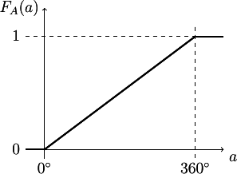

A very brief guide to probability¶
What is a ‘probability’?¶
Probability is a tricky beast to define. There are two ways of viewing what the probability of an event \(A\) actually is. These are termed the frequentist and Bayesian viewpoints:
A frequentist views the probability of an event, \(A\) as the ratio between the number of times that \(A\) happened (was true) and the number of times \(A\) or not \(A\) happened:
\[\boxed{ P(A) = \frac{n(A)}{n(A) + n(\lnot A)} }\]Notice how we’ve used \(n(A)\) to mean ‘the number of times \(A\) happened’ and \(\lnot A\) to mean ‘not \(A\)’.
A Bayesian views the probability of \(A\) as measure of our belief that \(A\) is true. They use \(0\) to show absolute certainty in \(\lnot A\) and \(1\) to show absolute certainty in \(A\).
Either viewpoint can be valid. Should \(A\) represent a single result from many trials, for example tossing a coin and getting a Tail, the frequentist approach is intuitive and useful. Should \(A\) represent a single true/false statement, for example ‘this drug is more effective than a placebo’, the truth of the statement does not change each time you ask the question. In such cases thinking of probability as a measure of belief makes sense. Which view of probability is useful depends on the problem being addressed.
Also, did you notice the equation up there was boxed? I’ll put equations which are very useful definitions and terms to learn in boxes like that.
Random Variables¶
Very often one will be asked to find the probability of some random variable having a particular range of values. A random variable is just some number (or, in general, sets of numbers) we can observe or measure in some process. For example, a person’s height is a random variable: until we measure it, we cannot say with certainty what it is.
Usually a random variable is denoted with a capital letter and a particular observation of that random variable with a lower-case letter. For example we may use \(H\) to mean ‘the height of a person’ and \(h\) to mean ‘the measured height of a particular person’.
For example we can read \(P(H \le 180\mbox{cm})\) as ‘the probability that the height of a person is less than or equal to 180cm’. Similarly we can read \(P(H \le h)\) as ‘the probability that the height of a person is less than or equal to \(h\)’. Notice how \(H\) always stands for ‘the height of a person’ whereas \(h\) stands for a particular height (e.g. 180cm or 137.5cm).
What this means in practise is that if you have a function which deals with probability, all the arguments to that function which are numbers should be lower-case!
Often this can be confusing so below, when we present some common functions, we’ll use \(\blacklozenge\) to mean ‘a random variable’ (e.g. \(H\)) and \(\lozenge\) to mean ‘the value of a random variable’ (e.g. \(h\)). When using the definitions of these functions you can substitute the \(\blacklozenge\) and \(\lozenge\) appropriately.
Remember: \(\blacklozenge\) is just a label which tells us what random variable we’re dealing with, \(\lozenge\) is that variable’s actual value.
The Cumulative Distribution Function¶
The Cumulative Distribution Function (CDF) is, in essence, the starting point from which everything else you’ll use in probability derives. It is simply a function that tells us something about the value of a random variable. In fact it tells us the probability that a random variable will have a particular value or lower. The CDF for the random variable \(\blacklozenge\) is defined to be:
Recall that \(\blacklozenge\) is just a label telling us what the random variable is. We could write down the definition of the CDF for the height of a person by simply substituting \(H\) and \(h\):
Free variables¶
Now, it is only a convention that we use corresponding lower-case letters to denote particular values of the random variable. The CDF for the height of a person could just as easily been written as \(F_H(x) = P(H \le x)\). The important thing is that we know what random variable we’re talking about. Variables, like \(h\), which we are free to re-name—assuming we do it consistently—are called free variables.
It is important to note what variables are free variables since it is often the case that a proof can be completed by just changing an \(x\) to a \(y\) in the right place!
Why not just talk about \(P(\blacklozenge = \lozenge)\)?¶
So why do we use \(P(\blacklozenge \le \lozenge)\) instead of \(P(\blacklozenge = \lozenge)\)? Well, the answer is surprising: for many random variables the value of \(P(\blacklozenge = \lozenge)\) is always zero!
Imagine, for a moment, that \(\blacklozenge\) is ‘the hour shown on a clock’ which we’ll call \(C\). If we assume this is a usual 12-hour clock, there are 12 distinct values that \(C\) can take. Let’s use the frequentist approach to calculate \(P(C = c)\):
If we look at the clock \(N\) times at random we’d expect on average one twelfth of the time to find that the hour is \(c\) so \(n(C = c) = N/12\) if \(1 \le c \le 12\) and zero otherwise.
The rest of the time \(C \ne c\) and so \(n(C \ne c) = 11N / 12\) if \(1 \le c \le 12\) and \(n(C \ne c) = N\) otherwise.
Using the frequentist definition of probability, therefore,
\[\begin{split}P(C = c) = \left\{ \begin{array}{c l l} \frac{N/12}{N/12 + 11N/12} & = 1/12 & \mbox{if } 1 \le c \le 12 \\ 0 / N & = 0 & \mbox{otherwise} \end{array} \right.\end{split}\]
All fine and good. But now consider \(\blacklozenge\) being ‘the angle the hour hand makes with the vertical’, or \(A\). Again consider the frequentist approach.
- There is one and only one case when \(A = a\) so \(n(A = a) = 1\).
- There are an infinity of angles which are not \(a\) so \(n(A \ne a) = \infty\).
- Hence \(P(A = a) = 1 / \infty = 0\).
The argument above justifies our assertion that some random variables end up with the probability of them taking any one value as being zero. To restate: there are an infinity of possible angles that the hour hand can take so, assuming them all to be equally likely, the probability of any one of them is zero.
For most random variables it often makes more sense to consider the probability of them taking a range of values. For example, if the hour hand has angle \(a\) corresponding to hour \(c\) then it follows that \((c-1) \times 30^\circ < a \le c \times 30^\circ\). It should be possible to convince yourself it follows that
or, making use of the CDF for \(A\):
Notice that the CDF for \(A\) is actually useful and has a sensible value. If every position of the hour hand is equally likely then \(F_A(0^\circ) = 0\) and \(F_A(360^\circ) = 1\). If we were to plot the value of \(F_A\) it would look something like this:

We can even write down an explicit equation for \(F_A\):
It is instructive to use this definition of \(F_A(a)\) to convince yourself that it can be used to show that \(P(C=c) = 1/12\) for valid \(c\).
The Gaussian CDF¶
There is a CDF which often comes up when measuring ‘natural’ random variables (like the height of a person) called the Gaussian CDF. You may also have heard it called the normal distribution. Let’s not worry for the moment exactly how hit is defined, instead lets just take a look at it:
![%% axes
\draw[->] (-.5,0)--(4.75,0) node[below right]{$g$};
\draw[->] (2,-.25)--(2,3.75) node[left]{$F_G(g)$};
%% the CDF
\begin{scope}[very thick]
%% \draw plot[id=gaussian-cdf,domain={-.5:4.75}] function{3*0.5*(1+erf((x-2)/((2.0/3.0)*sqrt(2))))};
\draw plot file {%(wd)s/teaching/probability_guide/gaussian-cdf.table};
\end{scope}
%% the bounds
\begin{scope}[dashed]
\draw (-.5,3)--(4.25,3);
\draw (-.5,1.5)--(4.25,1.5);
\draw (4,3.25)--(4,-.25);
\draw (0,3.25)--(0,-.25);
\draw (-.5,0.5)--(4.25,0.5);
\draw (-.5,2.5)--(4.25,2.5);
\draw (1.333,3.25)--(1.333,-.25);
\draw (2.666,3.25)--(2.666,-.25);
\end{scope}
%% y-axis
\draw (-.5,3) node[left]{1};
\draw (-.5,1.5) node[left]{0.5};
\draw (-.5,0) node[left]{0};
\draw (-.5,0.5) node[left]{$\frac{1}{6}$};
\draw (-.5,2.5) node[left]{$\frac{5}{6}$};
%% x-axis2
\draw (0,-.5) node{$-3$};
\draw (1.333,-.5) node{$-1$};
\draw (2,-.5) node{$0$};
\draw (2.666,-.5) node{$1$};
\draw (4,-.5) node{$3$};](../../_images/tikz-b995d173731b0d95621f534ba4ccaedcad1417f9.png)
Being able to sketch the Gaussian CDF is very useful. We can already see some things from this picture. For instance, there is a 0.5 probability of \(G \le 0\). Also there is a probability of approximately \(2/3\) that values are within \(\pm 1\) of zero [1]. The Gaussian is well suited to random variables whose values cluster around some central point and are spread equally either side.
We find the Gaussian is often a good fit for ‘natural’ random variables like the height of a person. Here is the CDF of measured heights for women in the U.K.
![%% axes
\draw[->] (-.5,0)--(4.75,0) node[below right]{$h$};
\draw[->] (2,-.25)--(2,3.75) node[left]{$F_H(h)$};
%% the CDF
\begin{scope}[very thick]
%% \draw plot[id=gaussian-cdf,domain={-.5:4.75}] function{3*0.5*(1+erf((x-2)/((2.0/3.0)*sqrt(2))))};
\draw plot file {%(wd)s/teaching/probability_guide/gaussian-cdf.table};
\end{scope}
%% the bounds
\begin{scope}[dashed]
\draw (-.5,3)--(4.25,3);
\draw (-.5,1.5)--(4.25,1.5);
\draw (4,3.25)--(4,-.25);
\draw (0,3.25)--(0,-.25);
\end{scope}
%% y-axis
\draw (-.5,3) node[left]{1};
\draw (-.5,1.5) node[left]{0.5};
\draw (-.5,0) node[left]{0};
%% x-axis2
\draw (0,-.5) node{148cm};
\draw (2,-.5) node{163cm};
\draw (4,-.5) node{178cm};](../../_images/tikz-f1dc661ffdfae61994e687ead47300e90053a360.png)
The CDF of measured heights for women in the U.K.
Notice that it’s pretty much the same shape as the Gaussian. In fact we can stretch and scale the Gaussian CDF to fit the data:
We can generalise this stretching and scaling to fit a Gaussian random variable centred on \(\mu\) and with around 2/3 of the observed values within \(\sigma\) of \(\mu\). Let’s call this random variable \(X_g\). We can write down the CDF for \(X_g\) in terms of a stretched version of \(F_G\):
We term \(\mu\) the mean and \(\sigma\) the standard deviation. We’ll return to these later and define them properly but for now just think of them as knobs to control the shape of the Gaussian CDF. The random variable \(G'\) is still Gaussian, it’s just been stretched and scaled. We differentiate a Gaussian random variable with \(\mu = 0\) and \(\sigma = 1\) (i.e. \(G\)) by calling it the standard Gaussian.
We call these knobs parameters and we differentiate them from random variable values by putting them after a ‘;’ in the function arguments.
The Probability Density Function¶
![[->,node distance=4.8cm,thick]
\node[state] (PDF) {PDF};
\node[state] (CDF) [left of=PDF] {CDF};
\node[state] (MGF) [right of=PDF] {MGF};
\path (PDF) edge [bend left,below] node {$\displaystyle F_\blacklozenge(\lozenge) = \int_{-\infty}^\lozenge f_\blacklozenge(\heartsuit) \, \mbox{d} \heartsuit$} (CDF)
edge [bend left,above] node {$\displaystyle g_\blacklozenge(\spadesuit) \triangleq \mathcal{L}\left[f_\blacklozenge(\lozenge)\right]$}(MGF);
\path (CDF) edge [bend left,above] node {$\displaystyle f_\blacklozenge(\lozenge) \triangleq \frac{d}{d\lozenge} F_\blacklozenge(\lozenge)$} (PDF);
\path (MGF) edge [bend left,below] node {$\displaystyle f_\blacklozenge(\lozenge) = \mathcal{L}^{-1}\left[ g_\blacklozenge(\spadesuit) \right]$} (PDF);](../../_images/tikz-340584ab820e3931e5480bf91840aa092dd96373.png)
\(\heartsuit\) and \(\spadesuit\) are free variables; \(\blacklozenge\) is the name of a random variable; \(\lozenge\) is a particular value of \(\blacklozenge\).
| [1] | The actual probability is more like 0.682. |